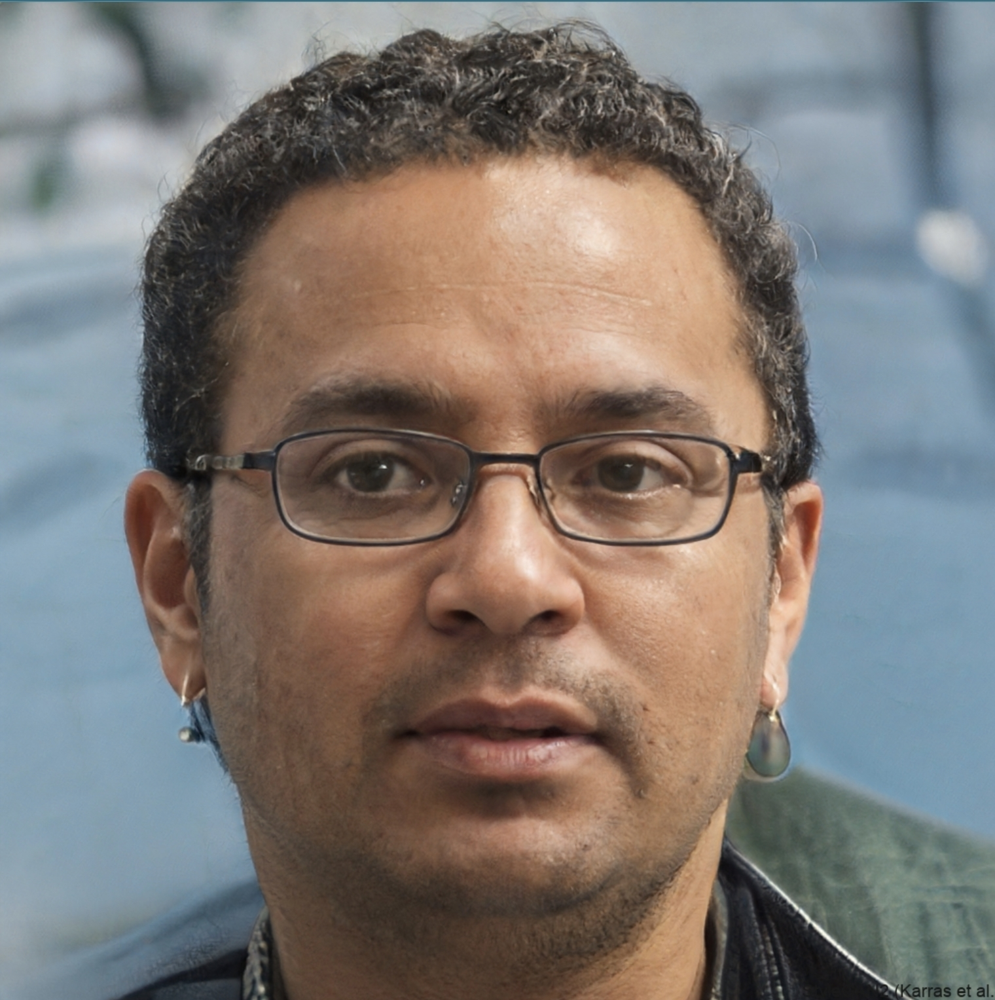
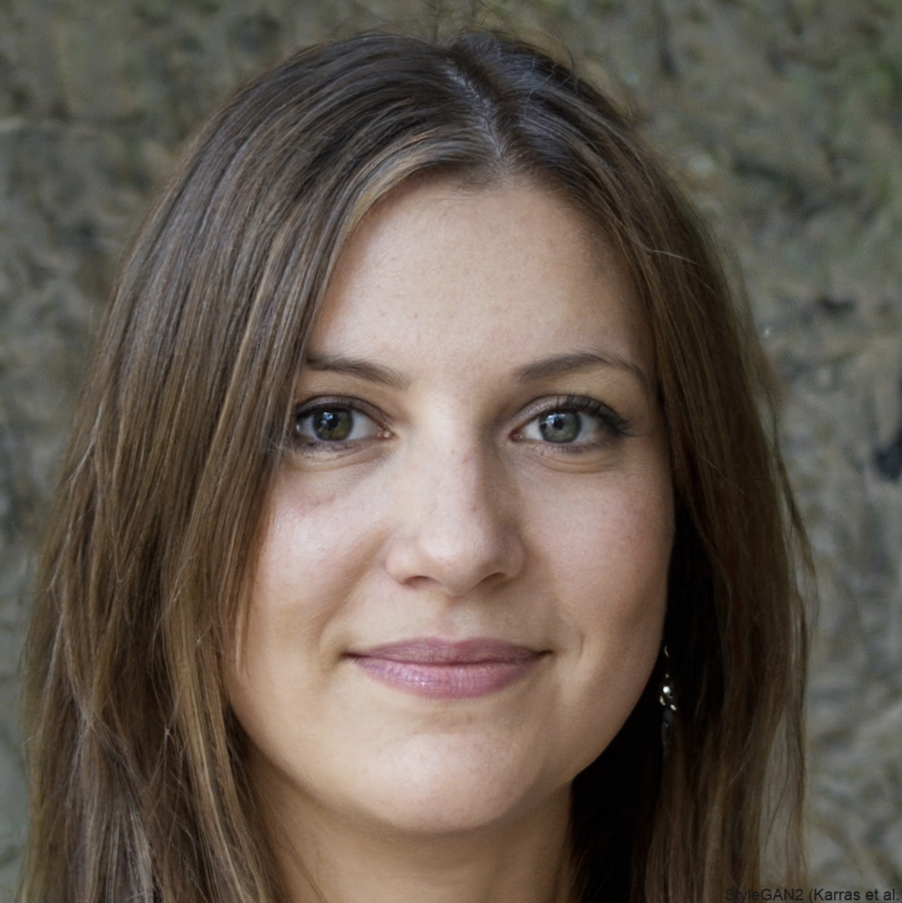

Techcon 2023 is honored to host a diverse and esteemed lineup of speakers who are at the forefront of technological innovation. These visionary leaders, industry experts, and thought leaders will share their profound insights, groundbreaking perspectives, and extensive experience to inspire, educate, and challenge you to reimagine the tech
Keynote Speaker
|
Dr. Alexa Paterson Chief Technology Officer at A.I. Horizons Dr. Alexa Patterson is a visionary leader in the field of artificial intelligence, with a passion for harnessing the power of technology to solve complex real-world problems. As Chief Technology Officer at A.I. Horizons, she spearheads cutting-edge research and development initiatives, driving innovation in AI applications ranging from healthcare to environmental sustainability. Dr. Patterson holds a Ph.D. in Computer Science from Stanford University and is a frequent speaker at international conferences and industry events. Her keynote address will explore the transformative potential of AI and its impact on the future of society. |
Breakout Session Speakers
|
Dr. Marcus Smith Professor of Cybersecurity at MIT Dr. Marcus Smith is a renowned cybersecurity expert, recognized for his groundbreaking contributions to the field of information security. As a professor at MIT, he conducts research on advanced cyber threats and develops innovative defense strategies to protect critical infrastructure and sensitive data. Dr. Smith's extensive experience in the cybersecurity industry spans both academia and government. His breakout session will delve into the evolving landscape of cybersecurity threats and provide insights into how organizations can effectively safeguard their systems and data. |
 |
|
Sarah Jones Founder and CEO of EcoTech Innovations Sarah Jones is a passionate entrepreneur and environmental advocate, dedicated to using technology to address climate change and sustainability challenges. As Founder and CEO of EcoTech Innovations, she leads a team of engineers and scientists in developing sustainable energy solutions and eco-friendly technologies. Sarah's expertise lies in renewable energy sources, waste management, and sustainable urban development. Her breakout session will showcase innovative tech solutions that are paving the way for a greener future. |
Hands-on-Workshop Speakers
|
Dr. David Chen Lead Software Engineer at CloudTech Solutions David Chen is a skilled software engineer with extensive experience in cloud computing and application development. As Lead Software Engineer at CloudTech Solutions, he architects and implements cloud-based solutions for businesses of all sizes. David is an expert in cloud platforms such as AWS, Azure, and Google Cloud Platform. His hands-on workshop will guide participants through the process of building and deploying cloud-based applications. |
|
|
Emily Williams Data Scientist at Data Analytics Consulting Emily Williams is a data scientist with a passion for extracting meaningful insights from large datasets. As a Data Scientist at Data Analytics Consulting, she applies her expertise in machine learning and statistical analysis to help clients make informed business decisions. Emily is proficient in data visualization tools such as Tableau and Power BI. Her hands-on workshop will introduce participants to the fundamentals of data science and teach them how to use data analytics tools to solve business problems. |
 |
|
Robert Thompson Data Scientist at Data Analytics Consulting Sarah Jones is a passionate entrepreneur and environmental advocate, dedicated to using technology to address climate change and sustainability challenges. As Founder and CEO of EcoTech Innovations, she leads a team of engineers and scientists in developing sustainable energy solutions and eco-friendly technologies. Sarah's expertise lies in renewable energy sources, waste management, and sustainable urban development. Her breakout session will showcase innovative tech solutions that are paving the way for a greener future. |